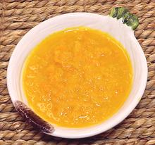

 |
Bajan Pepper SauceBarbados | ||||
| Makes: Effort: Sched: DoAhead: |
2 cups ** 50 min Yes |
Hot sauces of this type are on the table in most Bajan households, very tasty, but see Comments. | |||
|
|
10 8 1 1 1 2 1/4 1/2 1/2 |
oz T T T T c c T |
Scotch Bonnet Onions Turmeric Mustard Sugar, brown Olive Oil, ExtV Vinegar, white Water Salt |
Make - (50 min - 30 min work)
|